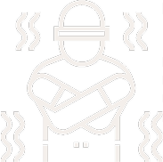
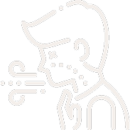

What Causes Hypothermia?
Cold, wind, and wet conditions can quickly lower body temperature. Knowing these risks helps prevent dangerous situations.
Cold Weather Exposure
Outside in low temperatures without proper clothing.
Wind & Wet Conditions
Windchill speeds up heat loss; wet clothes make it worse.
Submersion in Cold Water
Falling into icy water can cause hypothermia in minutes.
How to Stay Safe ?
Proper clothing, staying dry, and knowing the signs of hypothermia can prevent danger. Be prepared and take precautions in cold conditions.
Before You Go: Prepare & Prevent
Preparation is key to staying safe in cold weather. Appropriate dressing, pack essential gear, and check current conditions before heading out.
Recognizing Hypothermia: Signs & Symptoms
Early detection is crucial. Watch for shivering, confusion, slurred speech, and fatigue. Severe cases lead to stopped shivering and unconsciousness.
Mild
Symptoms:
Shivering, numb fingers, slight confusion, cold skin.
What to Do:
Seek warmth, add dry layers, drink warm fluids, and stay active.
Moderate
Symptoms:
Uncontrollable shivering, slurred speech, clumsiness, slow thinking.
What to Do:
Move to shelter, remove wet clothing, wrap in blankets, and apply warm compresses to the chest and neck.
Severe
Symptoms:
No shivering, weak or irregular pulse, shallow breathing, unconsciousness.
What to Do:
Call for emergency help immediately. Keep the person warm, handle them gently, and avoid sudden movements.
Emergency Response: What to Do
Acting quickly can save a life. If someone shows signs of hypothermia, focus on warming them up, keeping them dry, and seeking medical help immediately.
Emergency Contacts
In an emergency, call for help immediately.
Kalmont Mountain Rescue – 555-1000 (24/7 Emergency Line)
Hypothermia & First Aid Help – (555) 369-2580
Local Search & Rescue Dispatch – 555-3000
Emergency Service – 911